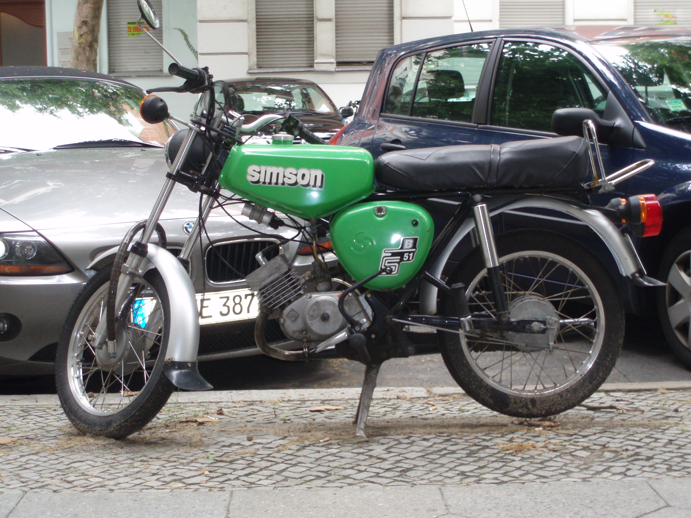

Witaj na stronie o simsonach
Simson – były niemiecki producent motocykli i motorowerów. Działalność firmy rozpoczęli bracia Simson w roku 1856 od produkcji broni. Dziś z ich nazwiskiem głównie są kojarzone motorowery, które zyskały dużą popularność w Niemczech wschodnich (DDR), Polsce oraz innych krajach sąsiednich, zwłaszcza w krajach bloku wschodniego. Najbardziej popularnymi w Polsce są modele Simson S51 oraz skuter Simson SR50.
